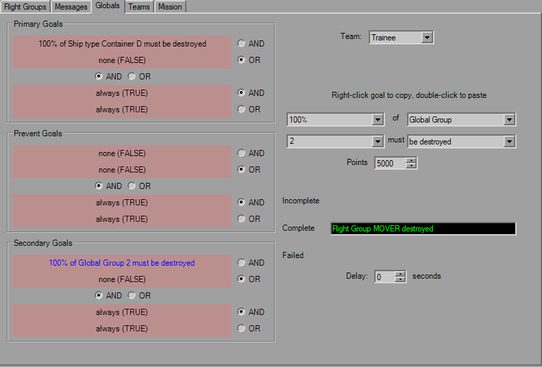

Global Goals

This tab is fairly straight forward and defines the global goals for each team. Four goals for each category, standard trigger rules apply, including the toolbar and mouse controls for Copy and Paste functionality.
Unlike TIE, points can be added/subtracted from each set of goals. Custom goal strings for each applicable goal state can be set as well.
As was the case in TIE, either ensure that when using single goals it's set to "OR FALSE" or "AND TRUE", as many times I've seen this been set to "AND FALSE" which basically means the goal will never complete, and you'll never finish the mission. YOGEME defaults to "OR FALSE" so you shouldn't have to worry about it.